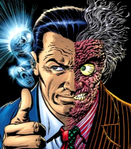

Ameaça Nível Alfa: Duas-Caras
Nome Real: Harvey Dent

Perfil Psicológico Operacional
Antigo "Cavaleiro Branco" de Gotham, agora fragmentado num transtorno dissociativo de identidade após um ataque com ácido. Toma as suas decisões de vida e morte estritamente através da probabilidade e do acaso.
Probabilidade de Ataque Letal:
Status Moral: A esperança de Gotham Justiça cega e distorcida.
Cargo Anterior: DA de Gotham City.
> O Fator da Moeda (Evidência 44-B)
- Moeda de um dólar de prata com duas caras.
- Um dos lados está severamente arranhado.
- Lado limpo: A vítima é poupada. Lado arranhado: Execução imediata.
"O mundo é cruel. E a única moralidade num mundo cruel... é o acaso. Imparcial. Injusto. Justo."
Gravação do Sequestro da Família Gordon